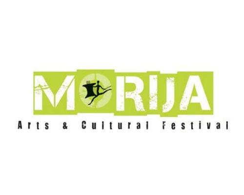
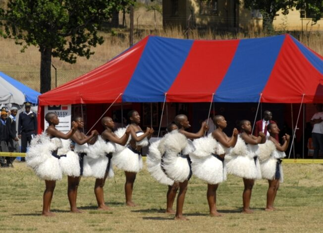

Morija Arts & Cultural Festival
Experience the Heart of Basotho Culture
Home | About | Programme | Tickets | Contact

Welcome to the Festival
Discover the beauty and richness of Basotho culture at the Morija Arts and Cultural Festival. This exciting event brings together music, dance, food and art in one vibrant celebration. Visitors from across Lesotho and around the world gather to experience this unique cultural showcase. It is the perfect destination for anyone interested in heritage and tourism.
The festival offers a memorable experience filled with traditional performances and modern creativity. Guests can explore local crafts, enjoy delicious Basotho cuisine and interact with talented artists. The event plays an important role in promoting tourism and preserving culture. Every year, the festival grows bigger and more exciting.
Festival Highlights


Event Details
Date: 28 September 2026
Location: Morija, Lesotho
Why You Should Attend
Experience authentic Basotho traditions and cultural performances. Meet local artists and explore unique handmade crafts. Enjoy a variety of food, music and entertainment throughout the day. This festival offers something for everyone, making it a must-visit event.
Join Us!
Be part of this exciting cultural celebration and create unforgettable memories. Bring your friends and family to enjoy a day full of culture and fun. Book your tickets early and secure your place at this amazing event. We look forward to welcoming you to Morija.